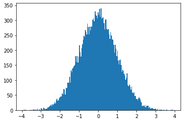

Literate AI programming with Python
elisp, lisp, python, bash
Table of Contents
- 1. TODO lectures(기록날짜임.. 기록만 하지말고 정리를하자)
- 2. pyenv은 파이썬 버전을 다양하게 사용할 수 있다
- 3. virtualenv 프로젝트별로 패키지들의 충돌을 막아주기 위한 가상환경이다.
- 4. pyvenv-create를 이용해서 virtualenv를 새로 생성하려 했으나 제대로 작동이 안되었다;;
- 4.1. pyenv가 작동하는지부터 확인
- 4.2. pyvenv-create.el 소스코드를 보며 원인을 찾아보다 virtualenv 에서 에러코드를 발생하는 것을 발견
- 4.2.1. virtualenv 실행
- 4.2.2. TODO error code(에러를 새 버퍼에 띄우는데 바로 나타내는 방법은 없는걸까, 버퍼에 나타난 에러를 복사한후 소스코드 블럭안에 넣어놨다)
- 4.2.3. PATH쪽 확인
- 4.2.4. 구글링해보니 python@2 재설치로 해결했다는 걸 봄. 삭제하면 안된다는 글을 본것 같은데;; 포멧 각인가
- 4.2.5. virtualenv 실행
- 4.2.6. error code
- 4.2.7. 구글링..구글링..
- 4.2.8. 다시 실행해보니 제대로 작동;; 파이썬과 친해지려면 한참 멀었구나
- 4.2.9. TODO 정상 작동! 일단 해결했는데 python@2 버전은 설치 안해놔도 되나;;
- 4.2.10. env에 uiap가 정상적으로 생성되었고, pyvenv-workon실행시키니 minibuffer에 해당 env가 표시되는것도 확인.
- 4.2.11. TODO html로 export할때 RESULTS: 결과중 일부만 색상이나 밑줄등 바꾸려면 어떻게 해야할까?
- 5. 웹으로 확인차 export할 때 블럭마다 confirm을 묻는데 매번 no 쳐야했다.
- 6. install jupyter
- 7. anaconda 를 설치했으면 됐는데
- 7.1. install 가능한 버전 확인
- 7.2. 새로 가상환경을 만들고 anaconda를 설치하자
- 7.2.1. virtualenvs 확인
- 7.2.2. 잠깐 왜
- 7.2.3. pyvenv.el을 보니 exec-path를 참조한다고 해 있어서 Users/sroh.pyenv/shims 을 추가
- 7.2.4. M-x pyvenv-create 선택 후 test-anaconda로 이름을 설정하고 python 선택
- 7.2.5. anaconda 설치
- 7.2.6. pyenv 버전 변경
- 7.2.7. pyvenv-create 테스트
- 7.2.8. python 버전 밑 위치 확인
- 7.2.9. virtualenv 설치
- 7.2.10. virtualenv 버전 확인
- 7.2.11. pyvenv-create 테스트
- 7.2.12. pyvenv-workon 으로 아나콘다 버전 설정하고 create 실행하니 경로가 선택한 아나콘다 버전을 가리킨다.
- 7.2.13. pyenv virtualenvs 확인해보자
- 7.2.14. workon으로 변경해보자
- 7.2.15. virtualenv를 anaconda버전으로 설정해도 create를 할때 shims/python으로 하면 3.8.5 버전으로 설치된다!
- 7.2.16. 또다른 문제
- 7.2.17. 결론 WORKFLOW
- 7.2.18. python-language-server 설치
- 8. LSP mode in org-babel
- 9. lsp 에서 lsp-python-ms 로 갈아탔다
- 10. TODO 소스블락이 여러개일때 lsp-org 가 제대로 작동하게 하는 방법?
- 11. 출력 results 에 대해 좀 알아보자 출력이 헷갈린다. print(… 그냥 print없이 변수 출력
- 12. ipynb to py
- 13. latex
- 14. update tex live update
- 15. for fixing error, install wrapfig, capt-of
1 TODO lectures(기록날짜임.. 기록만 하지말고 정리를하자)
1.1 200906
1.2 200907
1.3 200908
1.4 200908-2
1.5 200908-3
1.6 200909-1
1.7 200909-2
1.8 200910
1.9 200911
1.10 200912
1.11 200914
1.12 200915
1.13 200916
1.14 200917
2 pyenv은 파이썬 버전을 다양하게 사용할 수 있다
3 virtualenv 프로젝트별로 패키지들의 충돌을 막아주기 위한 가상환경이다.
pyenv의 목록에 virtualenv가 들어가기 때문에 pyenv를 먼저 설치
4 pyvenv-create를 이용해서 virtualenv를 새로 생성하려 했으나 제대로 작동이 안되었다;;
4.1 pyenv가 작동하는지부터 확인
잘 작동하는걸로 봐서는 다른 곳에 원인이 있는 것 같음
pyenv --help
Usage: pyenv <command> [<args>] Some useful pyenv commands are: --version Display the version of pyenv activate Activate virtual environment commands List all available pyenv commands deactivate Deactivate virtual environment exec Run an executable with the selected Python version global Set or show the global Python version(s) help Display help for a command hooks List hook scripts for a given pyenv command init Configure the shell environment for pyenv install Install a Python version using python-build local Set or show the local application-specific Python version(s) prefix Display prefix for a Python version rehash Rehash pyenv shims (run this after installing executables) root Display the root directory where versions and shims are kept shell Set or show the shell-specific Python version shims List existing pyenv shims uninstall Uninstall a specific Python version version Show the current Python version(s) and its origin version-file Detect the file that sets the current pyenv version version-name Show the current Python version version-origin Explain how the current Python version is set versions List all Python versions available to pyenv virtualenv Create a Python virtualenv using the pyenv-virtualenv plugin virtualenv-delete Uninstall a specific Python virtualenv virtualenv-init Configure the shell environment for pyenv-virtualenv virtualenv-prefix Display real_prefix for a Python virtualenv version virtualenvs List all Python virtualenvs found in `$PYENV_ROOT/versions/*'. whence List all Python versions that contain the given executable which Display the full path to an executable See `pyenv help <command>' for information on a specific command. For full documentation, see: https://github.com/pyenv/pyenv#readme
pyenv virtualenvs
3.8.5/envs/emacs (created from /Users/sroh/.pyenv/versions/3.8.5) 3.8.5/envs/opencv (created from /Users/sroh/.pyenv/versions/3.8.5) * anaconda3-5.3.1 (created from /Users/sroh/.pyenv/versions/anaconda3-5.3.1) anaconda3-5.3.1/envs/uiap (created from /Users/sroh/.pyenv/versions/anaconda3-5.3.1) emacs (created from /Users/sroh/.pyenv/versions/3.8.5) opencv (created from /Users/sroh/.pyenv/versions/3.8.5)
4.2 pyvenv-create.el 소스코드를 보며 원인을 찾아보다 virtualenv 에서 에러코드를 발생하는 것을 발견
4.2.1 virtualenv 실행
virtualenv
4.2.2 TODO error code(에러를 새 버퍼에 띄우는데 바로 나타내는 방법은 없는걸까, 버퍼에 나타난 에러를 복사한후 소스코드 블럭안에 넣어놨다)
- 파이썬 버전이 2.7.16 을 찾네..
- 2.7.16은 맥에 기본적으로 깔려있는 버전이고, 현재 깔아놓은 파이썬 버전은 3.8.5 이다. 구글링..구글링..구글링..
ERROR:root:code for hash md5 was not found.
Traceback (most recent call last):
File "/usr/local/Cellar/python@2/2.7.16/Frameworks/Python.framework/Versions/2.7/lib/python2.7/hashlib.py", line 147, in <module>
globals()[__func_name] = __get_hash(__func_name)
File "/usr/local/Cellar/python@2/2.7.16/Frameworks/Python.framework/Versions/2.7/lib/python2.7/hashlib.py", line 97, in __get_builtin_constructor
raise ValueError('unsupported hash type ' + name)
ValueError: unsupported hash type md5
ERROR:root:code for hash sha1 was not found.
Traceback (most recent call last):
File "/usr/local/Cellar/python@2/2.7.16/Frameworks/Python.framework/Versions/2.7/lib/python2.7/hashlib.py", line 147, in <module>
globals()[__func_name] = __get_hash(__func_name)
File "/usr/local/Cellar/python@2/2.7.16/Frameworks/Python.framework/Versions/2.7/lib/python2.7/hashlib.py", line 97, in __get_builtin_constructor
raise ValueError('unsupported hash type ' + name)
ValueError: unsupported hash type sha1
ERROR:root:code for hash sha224 was not found.
Traceback (most recent call last):
File "/usr/local/Cellar/python@2/2.7.16/Frameworks/Python.framework/Versions/2.7/lib/python2.7/hashlib.py", line 147, in <module>
globals()[__func_name] = __get_hash(__func_name)
File "/usr/local/Cellar/python@2/2.7.16/Frameworks/Python.framework/Versions/2.7/lib/python2.7/hashlib.py", line 97, in __get_builtin_constructor
raise ValueError('unsupported hash type ' + name)
ValueError: unsupported hash type sha224
ERROR:root:code for hash sha256 was not found.
Traceback (most recent call last):
File "/usr/local/Cellar/python@2/2.7.16/Frameworks/Python.framework/Versions/2.7/lib/python2.7/hashlib.py", line 147, in <module>
globals()[__func_name] = __get_hash(__func_name)
File "/usr/local/Cellar/python@2/2.7.16/Frameworks/Python.framework/Versions/2.7/lib/python2.7/hashlib.py", line 97, in __get_builtin_constructor
raise ValueError('unsupported hash type ' + name)
ValueError: unsupported hash type sha256
ERROR:root:code for hash sha384 was not found.
Traceback (most recent call last):
File "/usr/local/Cellar/python@2/2.7.16/Frameworks/Python.framework/Versions/2.7/lib/python2.7/hashlib.py", line 147, in <module>
globals()[__func_name] = __get_hash(__func_name)
File "/usr/local/Cellar/python@2/2.7.16/Frameworks/Python.framework/Versions/2.7/lib/python2.7/hashlib.py", line 97, in __get_builtin_constructor
raise ValueError('unsupported hash type ' + name)
ValueError: unsupported hash type sha384
ERROR:root:code for hash sha512 was not found.
Traceback (most recent call last):
File "/usr/local/Cellar/python@2/2.7.16/Frameworks/Python.framework/Versions/2.7/lib/python2.7/hashlib.py", line 147, in <module>
globals()[__func_name] = __get_hash(__func_name)
File "/usr/local/Cellar/python@2/2.7.16/Frameworks/Python.framework/Versions/2.7/lib/python2.7/hashlib.py", line 97, in __get_builtin_constructor
raise ValueError('unsupported hash type ' + name)
ValueError: unsupported hash type sha512
4.2.3 PATH쪽 확인
(require 'pyvenv) (pyvenv-mode 1) ;; (pyvenv-create "uiap" "python3.8.5") (exec-path)
("/Users/sroh/.pyenv/versions/anaconda3-5.3.1/envs/uiap/bin/" "/Users/sroh/.pyenv/shims" "/usr/local/opt/python@3.8/libexec/bin" "/usr/local/bin" "/usr/bin" "/bin" "/usr/sbin" "/sbin" "/usr/local/Cellar/emacs-head@28/28.0.50_1/libexec/emacs/28.0.50/x86_64-apple-darwin19.6.0")
which python
/Users/sroh/.pyenv/shims/python
4.2.4 구글링해보니 python@2 재설치로 해결했다는 걸 봄. 삭제하면 안된다는 글을 본것 같은데;; 포멧 각인가
brew uninstall python@2
4.2.5 virtualenv 실행
virtualenv
4.2.6 error code
/usr/local/Cellar/pyenv/1.2.20/libexec/pyenv-exec: /usr/local/bin/virtualenv: /usr/local/opt/python@2/bin/python2.7: bad interpreter: No such file or directory /usr/local/Cellar/pyenv/1.2.20/libexec/pyenv-exec: line 48: /usr/local/bin/virtualenv: Undefined error: 0
4.2.7 구글링..구글링..
virtualenv를 재설치 해보라네
pip uninstall virtualenv
pip install virtualenv
Requirement already satisfied: virtualenv in /Users/sroh/.pyenv/versions/anaconda3-5.3.1/lib/python3.7/site-packages (20.0.31) Requirement already satisfied: importlib-metadata<2,>=0.12; python_version < "3.8" in /Users/sroh/.pyenv/versions/anaconda3-5.3.1/lib/python3.7/site-packages (from virtualenv) (1.7.0) Requirement already satisfied: six<2,>=1.9.0 in /Users/sroh/.pyenv/versions/anaconda3-5.3.1/lib/python3.7/site-packages (from virtualenv) (1.15.0) Requirement already satisfied: distlib<1,>=0.3.1 in /Users/sroh/.pyenv/versions/anaconda3-5.3.1/lib/python3.7/site-packages (from virtualenv) (0.3.1) Requirement already satisfied: filelock<4,>=3.0.0 in /Users/sroh/.pyenv/versions/anaconda3-5.3.1/lib/python3.7/site-packages (from virtualenv) (3.0.8) Requirement already satisfied: appdirs<2,>=1.4.3 in /Users/sroh/.pyenv/versions/anaconda3-5.3.1/lib/python3.7/site-packages (from virtualenv) (1.4.3) Requirement already satisfied: zipp>=0.5 in /Users/sroh/.pyenv/versions/anaconda3-5.3.1/lib/python3.7/site-packages (from importlib-metadata<2,>=0.12; python_version < "3.8"->virtualenv) (3.1.0)
4.2.8 다시 실행해보니 제대로 작동;; 파이썬과 친해지려면 한참 멀었구나
virtualenv --version
virtualenv 20.0.31 from /Users/sroh/.pyenv/versions/anaconda3-5.3.1/lib/python3.7/site-packages/virtualenv/__init__.py
4.2.9 TODO 정상 작동! 일단 해결했는데 python@2 버전은 설치 안해놔도 되나;;
(require 'pyvenv) (pyvenv-mode 1) (pyvenv-create "uiap" "python3.8.5")
pyenv virtualenvs
3.8.5/envs/emacs (created from /Users/sroh/.pyenv/versions/3.8.5) 3.8.5/envs/opencv (created from /Users/sroh/.pyenv/versions/3.8.5) * anaconda3-5.3.1 (created from /Users/sroh/.pyenv/versions/anaconda3-5.3.1) anaconda3-5.3.1/envs/uiap (created from /Users/sroh/.pyenv/versions/anaconda3-5.3.1) emacs (created from /Users/sroh/.pyenv/versions/3.8.5) opencv (created from /Users/sroh/.pyenv/versions/3.8.5)
4.2.10 env에 uiap가 정상적으로 생성되었고, pyvenv-workon실행시키니 minibuffer에 해당 env가 표시되는것도 확인.
3.8.5/envs/emacs (created from /Users/sroh/.pyenv/versions/3.8.5) 3.8.5/envs/opencv (created from /Users/sroh/.pyenv/versions/3.8.5) emacs (created from /Users/sroh/.pyenv/versions/3.8.5) opencv (created from /Users/sroh/.pyenv/versions/3.8.5) uiap (created from /usr/local/Cellar/python@3.8/3.8.5/Frameworks/Python.framework/Versions/3.8)
(pyvenv-workon "uiap")
4.2.11 TODO html로 export할때 RESULTS: 결과중 일부만 색상이나 밑줄등 바꾸려면 어떻게 해야할까?
5 웹으로 확인차 export할 때 블럭마다 confirm을 묻는데 매번 no 쳐야했다.
현재 해결된 문제의 코드를 다시 evaluate하면 다른 메세지를 나타내기 때문에 no를 해야했는데 ob-core.el 파일을 읽어보니 해결책이 있었다.
5.1 The variable `org-babel-confirm-evaluate-answer-no' is used by
the async export process, which requires a non-interactive environment, to override this check."
(setq org-babel-confirm-evaluate-answer-no t)
6 install jupyter
6.1 uiap 활성화(pyvenv-workon -> uiap)
6.2 version 확인
python -V
6.3 pip 업그레이드 (해야하나;;)
python3 -m pip install --upgrade pip
6.4 최신버전이라는군. jupyter 설치
python3 -m pip install jupyter
Requirement already satisfied: jupyter in /Users/sroh/.pyenv/versions/anaconda3-5.3.1/lib/python3.7/site-packages (1.0.0) Requirement already satisfied: jupyter-console in /Users/sroh/.pyenv/versions/anaconda3-5.3.1/lib/python3.7/site-packages (from jupyter) (5.2.0) Requirement already satisfied: notebook in /Users/sroh/.pyenv/versions/anaconda3-5.3.1/lib/python3.7/site-packages (from jupyter) (5.6.0) Requirement already satisfied: nbconvert in /Users/sroh/.pyenv/versions/anaconda3-5.3.1/lib/python3.7/site-packages (from jupyter) (5.4.0) Requirement already satisfied: qtconsole in /Users/sroh/.pyenv/versions/anaconda3-5.3.1/lib/python3.7/site-packages (from jupyter) (4.4.1) Requirement already satisfied: ipykernel in /Users/sroh/.pyenv/versions/anaconda3-5.3.1/lib/python3.7/site-packages (from jupyter) (4.9.0) Requirement already satisfied: ipywidgets in /Users/sroh/.pyenv/versions/anaconda3-5.3.1/lib/python3.7/site-packages (from jupyter) (7.4.1) Requirement already satisfied: jupyter-client in /Users/sroh/.pyenv/versions/anaconda3-5.3.1/lib/python3.7/site-packages (from jupyter-console->jupyter) (5.2.3) Requirement already satisfied: prompt-toolkit<2.0.0,>=1.0.0 in /Users/sroh/.pyenv/versions/anaconda3-5.3.1/lib/python3.7/site-packages (from jupyter-console->jupyter) (1.0.15) Requirement already satisfied: ipython in /Users/sroh/.pyenv/versions/anaconda3-5.3.1/lib/python3.7/site-packages (from jupyter-console->jupyter) (6.5.0) Requirement already satisfied: pygments in /Users/sroh/.pyenv/versions/anaconda3-5.3.1/lib/python3.7/site-packages (from jupyter-console->jupyter) (2.2.0) Requirement already satisfied: tornado>=4 in /Users/sroh/.pyenv/versions/anaconda3-5.3.1/lib/python3.7/site-packages (from notebook->jupyter) (5.1) Requirement already satisfied: Send2Trash in /Users/sroh/.pyenv/versions/anaconda3-5.3.1/lib/python3.7/site-packages (from notebook->jupyter) (1.5.0) Requirement already satisfied: traitlets>=4.2.1 in /Users/sroh/.pyenv/versions/anaconda3-5.3.1/lib/python3.7/site-packages (from notebook->jupyter) (4.3.2) Requirement already satisfied: jinja2 in /Users/sroh/.pyenv/versions/anaconda3-5.3.1/lib/python3.7/site-packages (from notebook->jupyter) (2.10) Requirement already satisfied: nbformat in /Users/sroh/.pyenv/versions/anaconda3-5.3.1/lib/python3.7/site-packages (from notebook->jupyter) (4.4.0) Requirement already satisfied: jupyter-core>=4.4.0 in /Users/sroh/.pyenv/versions/anaconda3-5.3.1/lib/python3.7/site-packages (from notebook->jupyter) (4.4.0) Requirement already satisfied: ipython-genutils in /Users/sroh/.pyenv/versions/anaconda3-5.3.1/lib/python3.7/site-packages (from notebook->jupyter) (0.2.0) Requirement already satisfied: pyzmq>=17 in /Users/sroh/.pyenv/versions/anaconda3-5.3.1/lib/python3.7/site-packages (from notebook->jupyter) (17.1.2) Requirement already satisfied: prometheus-client in /Users/sroh/.pyenv/versions/anaconda3-5.3.1/lib/python3.7/site-packages (from notebook->jupyter) (0.3.1) Requirement already satisfied: terminado>=0.8.1 in /Users/sroh/.pyenv/versions/anaconda3-5.3.1/lib/python3.7/site-packages (from notebook->jupyter) (0.8.1) Requirement already satisfied: mistune>=0.8.1 in /Users/sroh/.pyenv/versions/anaconda3-5.3.1/lib/python3.7/site-packages (from nbconvert->jupyter) (0.8.3) Requirement already satisfied: entrypoints>=0.2.2 in /Users/sroh/.pyenv/versions/anaconda3-5.3.1/lib/python3.7/site-packages (from nbconvert->jupyter) (0.2.3) Requirement already satisfied: bleach in /Users/sroh/.pyenv/versions/anaconda3-5.3.1/lib/python3.7/site-packages (from nbconvert->jupyter) (2.1.4) Requirement already satisfied: pandocfilters>=1.4.1 in /Users/sroh/.pyenv/versions/anaconda3-5.3.1/lib/python3.7/site-packages (from nbconvert->jupyter) (1.4.2) Requirement already satisfied: testpath in /Users/sroh/.pyenv/versions/anaconda3-5.3.1/lib/python3.7/site-packages (from nbconvert->jupyter) (0.3.1) Requirement already satisfied: defusedxml in /Users/sroh/.pyenv/versions/anaconda3-5.3.1/lib/python3.7/site-packages (from nbconvert->jupyter) (0.5.0) Requirement already satisfied: widgetsnbextension~=3.4.0 in /Users/sroh/.pyenv/versions/anaconda3-5.3.1/lib/python3.7/site-packages (from ipywidgets->jupyter) (3.4.1) Requirement already satisfied: python-dateutil>=2.1 in /Users/sroh/.pyenv/versions/anaconda3-5.3.1/lib/python3.7/site-packages (from jupyter-client->jupyter-console->jupyter) (2.7.3) Requirement already satisfied: six>=1.9.0 in /Users/sroh/.pyenv/versions/anaconda3-5.3.1/lib/python3.7/site-packages (from prompt-toolkit<2.0.0,>=1.0.0->jupyter-console->jupyter) (1.15.0) Requirement already satisfied: wcwidth in /Users/sroh/.pyenv/versions/anaconda3-5.3.1/lib/python3.7/site-packages (from prompt-toolkit<2.0.0,>=1.0.0->jupyter-console->jupyter) (0.1.7) Requirement already satisfied: pexpect; sys_platform != "win32" in /Users/sroh/.pyenv/versions/anaconda3-5.3.1/lib/python3.7/site-packages (from ipython->jupyter-console->jupyter) (4.6.0) Requirement already satisfied: simplegeneric>0.8 in /Users/sroh/.pyenv/versions/anaconda3-5.3.1/lib/python3.7/site-packages (from ipython->jupyter-console->jupyter) (0.8.1) Requirement already satisfied: pickleshare in /Users/sroh/.pyenv/versions/anaconda3-5.3.1/lib/python3.7/site-packages (from ipython->jupyter-console->jupyter) (0.7.4) Requirement already satisfied: setuptools>=18.5 in /Users/sroh/.pyenv/versions/anaconda3-5.3.1/lib/python3.7/site-packages (from ipython->jupyter-console->jupyter) (40.2.0) Requirement already satisfied: appnope; sys_platform == "darwin" in /Users/sroh/.pyenv/versions/anaconda3-5.3.1/lib/python3.7/site-packages (from ipython->jupyter-console->jupyter) (0.1.0) Requirement already satisfied: decorator in /Users/sroh/.pyenv/versions/anaconda3-5.3.1/lib/python3.7/site-packages (from ipython->jupyter-console->jupyter) (4.3.0) Requirement already satisfied: jedi>=0.10 in /Users/sroh/.pyenv/versions/anaconda3-5.3.1/lib/python3.7/site-packages (from ipython->jupyter-console->jupyter) (0.17.2) Requirement already satisfied: backcall in /Users/sroh/.pyenv/versions/anaconda3-5.3.1/lib/python3.7/site-packages (from ipython->jupyter-console->jupyter) (0.1.0) Requirement already satisfied: MarkupSafe>=0.23 in /Users/sroh/.pyenv/versions/anaconda3-5.3.1/lib/python3.7/site-packages (from jinja2->notebook->jupyter) (1.0) Requirement already satisfied: jsonschema!=2.5.0,>=2.4 in /Users/sroh/.pyenv/versions/anaconda3-5.3.1/lib/python3.7/site-packages (from nbformat->notebook->jupyter) (2.6.0) Requirement already satisfied: html5lib!=1.0b1,!=1.0b2,!=1.0b3,!=1.0b4,!=1.0b5,!=1.0b6,!=1.0b7,!=1.0b8,>=0.99999999pre in /Users/sroh/.pyenv/versions/anaconda3-5.3.1/lib/python3.7/site-packages (from bleach->nbconvert->jupyter) (1.0.1) Requirement already satisfied: ptyprocess>=0.5 in /Users/sroh/.pyenv/versions/anaconda3-5.3.1/lib/python3.7/site-packages (from pexpect; sys_platform != "win32"->ipython->jupyter-console->jupyter) (0.6.0) Requirement already satisfied: parso<0.8.0,>=0.7.0 in /Users/sroh/.pyenv/versions/anaconda3-5.3.1/lib/python3.7/site-packages (from jedi>=0.10->ipython->jupyter-console->jupyter) (0.7.1) Requirement already satisfied: webencodings in /Users/sroh/.pyenv/versions/anaconda3-5.3.1/lib/python3.7/site-packages (from html5lib!=1.0b1,!=1.0b2,!=1.0b3,!=1.0b4,!=1.0b5,!=1.0b6,!=1.0b7,!=1.0b8,>=0.99999999pre->bleach->nbconvert->jupyter) (0.5.1)
6.5 ipython 테스트
ipython -V
6.5.0
6.6 org-babel 테스트
print("hello world")
%matplotlib inline import matplotlib.pyplot as plt import numpy as np
6.7 matplotlib 설치
pip install matplotlib
%matplotlib inline import matplotlib.pyplot as plt import numpy as np
plt.hist(np.random.randn(20000), bins=200)
(array([ 1., 0., 1., 0., 0., 0., 0., 0., 1., 0., 1., 0., 3., 1., 1., 1., 0., 1., 5., 0., 3., 2., 0., 7., 5., 2., 8., 7., 3., 5., 5., 7., 10., 9., 12., 15., 17., 12., 20., 16., 21., 27., 23., 33., 37., 31., 32., 39., 43., 45., 45., 55., 52., 70., 69., 53., 76., 73., 91., 91., 91., 112., 92., 133., 126., 139., 143., 147., 151., 181., 160., 180., 159., 179., 216., 193., 179., 206., 219., 235., 247., 244., 268., 261., 253., 288., 277., 252., 278., 265., 279., 279., 302., 306., 297., 329., 319., 315., 306., 326., 319., 338., 312., 340., 305., 308., 310., 290., 269., 301., 303., 271., 268., 271., 253., 238., 260., 250., 236., 234., 218., 192., 218., 205., 180., 198., 165., 153., 167., 168., 151., 127., 134., 131., 121., 114., 101., 108., 123., 83., 80., 85., 78., 68., 78., 59., 56., 58., 48., 47., 37., 37., 32., 39., 44., 39., 32., 26., 12., 15., 16., 12., 17., 10., 14., 14., 14., 7., 9., 4., 7., 6., 7., 5., 3., 4., 5., 2., 2., 5., 0., 2., 2., 1., 1., 1., 0., 2., 0., 0., 1., 2., 0., 0., 0., 0., 0., 1., 0., 2.]), array([-3.90101691, -3.86191803, -3.82281914, -3.78372026, -3.74462138, -3.70552249, -3.66642361, -3.62732473, -3.58822584, -3.54912696, -3.51002808, -3.4709292 , -3.43183031, -3.39273143, -3.35363255, -3.31453366, -3.27543478, -3.2363359 , -3.19723701, -3.15813813, -3.11903925, -3.07994036, -3.04084148, -3.0017426 , -2.96264371, -2.92354483, -2.88444595, -2.84534707, -2.80624818, -2.7671493 , -2.72805042, -2.68895153, -2.64985265, -2.61075377, -2.57165488, -2.532556 , -2.49345712, -2.45435823, -2.41525935, -2.37616047, -2.33706158, -2.2979627 , -2.25886382, -2.21976494, -2.18066605, -2.14156717, -2.10246829, -2.0633694 , -2.02427052, -1.98517164, -1.94607275, -1.90697387, -1.86787499, -1.8287761 , -1.78967722, -1.75057834, -1.71147945, -1.67238057, -1.63328169, -1.59418281, -1.55508392, -1.51598504, -1.47688616, -1.43778727, -1.39868839, -1.35958951, -1.32049062, -1.28139174, -1.24229286, -1.20319397, -1.16409509, -1.12499621, -1.08589732, -1.04679844, -1.00769956, -0.96860068, -0.92950179, -0.89040291, -0.85130403, -0.81220514, -0.77310626, -0.73400738, -0.69490849, -0.65580961, -0.61671073, -0.57761184, -0.53851296, -0.49941408, -0.46031519, -0.42121631, -0.38211743, -0.34301855, -0.30391966, -0.26482078, -0.2257219 , -0.18662301, -0.14752413, -0.10842525, -0.06932636, -0.03022748, 0.0088714 , 0.04797029, 0.08706917, 0.12616805, 0.16526694, 0.20436582, 0.2434647 , 0.28256358, 0.32166247, 0.36076135, 0.39986023, 0.43895912, 0.478058 , 0.51715688, 0.55625577, 0.59535465, 0.63445353, 0.67355242, 0.7126513 , 0.75175018, 0.79084907, 0.82994795, 0.86904683, 0.90814571, 0.9472446 , 0.98634348, 1.02544236, 1.06454125, 1.10364013, 1.14273901, 1.1818379 , 1.22093678, 1.26003566, 1.29913455, 1.33823343, 1.37733231, 1.4164312 , 1.45553008, 1.49462896, 1.53372784, 1.57282673, 1.61192561, 1.65102449, 1.69012338, 1.72922226, 1.76832114, 1.80742003, 1.84651891, 1.88561779, 1.92471668, 1.96381556, 2.00291444, 2.04201333, 2.08111221, 2.12021109, 2.15930997, 2.19840886, 2.23750774, 2.27660662, 2.31570551, 2.35480439, 2.39390327, 2.43300216, 2.47210104, 2.51119992, 2.55029881, 2.58939769, 2.62849657, 2.66759546, 2.70669434, 2.74579322, 2.7848921 , 2.82399099, 2.86308987, 2.90218875, 2.94128764, 2.98038652, 3.0194854 , 3.05858429, 3.09768317, 3.13678205, 3.17588094, 3.21497982, 3.2540787 , 3.29317759, 3.33227647, 3.37137535, 3.41047423, 3.44957312, 3.488672 , 3.52777088, 3.56686977, 3.60596865, 3.64506753, 3.68416642, 3.7232653 , 3.76236418, 3.80146307, 3.84056195, 3.87966083, 3.91875972]), <BarContainer object of 200 artists>)

7 anaconda 를 설치했으면 됐는데
7.1 install 가능한 버전 확인
pyenv install -l
7.2 새로 가상환경을 만들고 anaconda를 설치하자
7.2.1 virtualenvs 확인
pyenv virtualenvs
7.2.2 잠깐 왜
(created from /usr/local/Cellar/python@3.8/3.8.5/Frameworks/Python.framework/Versions/3.8) 이지?
7.2.3 pyvenv.el을 보니 exec-path를 참조한다고 해 있어서 Users/sroh.pyenv/shims 을 추가
7.2.4 M-x pyvenv-create 선택 후 test-anaconda로 이름을 설정하고 python 선택
created virtual environment CPython3.8.5.final.0-64 in 1074ms creator CPython3Posix(dest=/Users/sroh/.pyenv/versions/test-anaconda, clear=False, global=False) seeder FromAppData(download=False, pip=bundle, setuptools=bundle, wheel=bundle, via=copy, app_data_dir=/Users/sroh/Library/Application Support/virtualenv) added seed packages: pip==20.2.2, setuptools==49.6.0, wheel==0.35.1 activators BashActivator,CShellActivator,FishActivator,PowerShellActivator,PythonActivator,XonshActivator
7.2.5 anaconda 설치
pyenv install anaconda3-5.3.1
pyenv versions
system 3.8.5 3.8.5/envs/emacs 3.8.5/envs/opencv * anaconda3-5.3.1 (set by /Users/sroh/.pyenv/version) anaconda3-5.3.1/envs/uiap emacs opencv
7.2.6 pyenv 버전 변경
pyenv global anaconda3-5.3.1
pyenv versions
system 3.8.5 3.8.5/envs/emacs 3.8.5/envs/opencv * anaconda3-5.3.1 (set by /Users/sroh/.pyenv/version) anaconda3-5.3.1/envs/uiap emacs opencv
python -V which python
Python 3.7.0 (default, Jun 28 2018, 07:39:16) [Clang 4.0.1 (tags/RELEASE_401/final)] /Users/sroh/.pyenv/shims/python
7.2.7 pyvenv-create 테스트
env로 test-anaconda 만들었음
pyenv virtualenvs
3.8.5/envs/emacs (created from /Users/sroh/.pyenv/versions/3.8.5) 3.8.5/envs/opencv (created from /Users/sroh/.pyenv/versions/3.8.5) * anaconda3-5.3.1 (created from /Users/sroh/.pyenv/versions/anaconda3-5.3.1) anaconda3-5.3.1/envs/uiap (created from /Users/sroh/.pyenv/versions/anaconda3-5.3.1) emacs (created from /Users/sroh/.pyenv/versions/3.8.5) opencv (created from /Users/sroh/.pyenv/versions/3.8.5)
created virtual environment CPython3.8.5.final.0-64 in 914ms creator CPython3Posix(dest=/Users/sroh/.pyenv/versions/ta, clear=False, global=False) seeder FromAppData(download=False, pip=bundle, setuptools=bundle, wheel=bundle, via=copy, app_data_dir=/Users/sroh/Library/Application Support/virtualenv) added seed packages: pip==20.2.2, setuptools==49.6.0, wheel==0.35.1 activators BashActivator,CShellActivator,FishActivator,PowerShellActivator,PythonActivator,XonshActivator
음 왜이렇지 버전이 꼬이네 약간 bashprofile 손 보고 다시 실행해본다 기록으론 못 남겼다 일단 shims의 python 버전은 제대로 출력된다
7.2.8 python 버전 밑 위치 확인
python -V
Python 3.7.0 (default, Jun 28 2018, 07:39:16) [Clang 4.0.1 (tags/RELEASE_401/final)]
which python
/Users/sroh/.pyenv/shims/python
7.2.9 virtualenv 설치
pip install virtualenv
Requirement already satisfied: virtualenv in /Users/sroh/.pyenv/versions/anaconda3-5.3.1/lib/python3.7/site-packages (20.0.31) Requirement already satisfied: filelock<4,>=3.0.0 in /Users/sroh/.pyenv/versions/anaconda3-5.3.1/lib/python3.7/site-packages (from virtualenv) (3.0.8) Requirement already satisfied: appdirs<2,>=1.4.3 in /Users/sroh/.pyenv/versions/anaconda3-5.3.1/lib/python3.7/site-packages (from virtualenv) (1.4.3) Requirement already satisfied: distlib<1,>=0.3.1 in /Users/sroh/.pyenv/versions/anaconda3-5.3.1/lib/python3.7/site-packages (from virtualenv) (0.3.1) Requirement already satisfied: six<2,>=1.9.0 in /Users/sroh/.pyenv/versions/anaconda3-5.3.1/lib/python3.7/site-packages (from virtualenv) (1.15.0) Requirement already satisfied: importlib-metadata<2,>=0.12; python_version < "3.8" in /Users/sroh/.pyenv/versions/anaconda3-5.3.1/lib/python3.7/site-packages (from virtualenv) (1.7.0) Requirement already satisfied: zipp>=0.5 in /Users/sroh/.pyenv/versions/anaconda3-5.3.1/lib/python3.7/site-packages (from importlib-metadata<2,>=0.12; python_version < "3.8"->virtualenv) (3.1.0)
7.2.10 virtualenv 버전 확인
virtualenv --version
virtualenv 20.0.31 from /Users/sroh/.pyenv/versions/anaconda3-5.3.1/lib/python3.7/site-packages/virtualenv/__init__.py
ok!
7.2.11 pyvenv-create 테스트
pyvenv-create 바로 사용하니 3.8.5버전으로 설치된다
7.2.12 pyvenv-workon 으로 아나콘다 버전 설정하고 create 실행하니 경로가 선택한 아나콘다 버전을 가리킨다.
설치도 제대로 된거 같다.
created virtual environment CPython3.7.0.final.0-64 in 949ms creator CPython3Posix(dest=/Users/sroh/.pyenv/versions/ta3, clear=False, global=False) seeder FromAppData(download=False, pip=bundle, setuptools=bundle, wheel=bundle, via=copy, app_data_dir=/Users/sroh/Library/Application Support/virtualenv) added seed packages: pip==20.2.2, setuptools==49.6.0, wheel==0.35.1 activators BashActivator,CShellActivator,FishActivator,PowerShellActivator,PythonActivator,XonshActivator
7.2.13 pyenv virtualenvs 확인해보자
pyenv virtualenvs
3.8.5/envs/emacs (created from /Users/sroh/.pyenv/versions/3.8.5) 3.8.5/envs/opencv (created from /Users/sroh/.pyenv/versions/3.8.5) * anaconda3-5.3.1 (created from /Users/sroh/.pyenv/versions/anaconda3-5.3.1) anaconda3-5.3.1/envs/uiap (created from /Users/sroh/.pyenv/versions/anaconda3-5.3.1) emacs (created from /Users/sroh/.pyenv/versions/3.8.5) opencv (created from /Users/sroh/.pyenv/versions/3.8.5)
제대로 설치된것 같다.
7.2.14 workon으로 변경해보자
제대로 작동된다.
7.2.15 virtualenv를 anaconda버전으로 설정해도 create를 할때 shims/python으로 하면 3.8.5 버전으로 설치된다!
7.2.16 또다른 문제
virtualenv 폴더가 아나콘다 밑에 생성이 안되네;;
7.2.17 결론 WORKFLOW
- pyenv 로 python 버전 설치 (python2… python3… anaconda3… 등등)
pyenv install anaconda3-5.3.1
- WORKONHOME 재설정
- pyvenv-create 설정
python 디렉토리는 anaconda 밑으로 수동으로 설정.(지금은 anaconda설치니깐..)
- test
pyvenv-workon test-anaconda
pip install numpy
Requirement already satisfied: numpy in /Users/sroh/.pyenv/versions/anaconda3-5.3.1/lib/python3.7/site-packages (1.15.1)
7.2.18 python-language-server 설치
which pyls
/Users/sroh/.pyenv/shims/pyls
global 하라는 메세지가 나온다.
pyvenv-workon을 uiap로 설정하고 pyls설치
pip install 'python-language-server[all]'
which pyls
/Users/sroh/.pyenv/shims/pyls
import numpy를 하니 jupyterclient 가 없다고 나온다
Traceback (most recent call last):
File "/Users/sroh/.emacs.d/elpa/ob-ipython-20180224.953/client.py", line 1, in <module>
import jupyter_client as client
ModuleNotFoundError: No module named 'jupyter_client'
pip install jupyter_client
8 LSP mode in org-babel
8.1 org file안에서 beginsrc ipython …. :tangle "filename.py" 를 해준다
8.2 filename.py를 열고 lsp server를 작동시킨다.
8.3 다시 org file 을 열고 lsp-org 실행시킨다.
org babel 에서 잘 작동된다!!! YES!
- 이 순서가 맞는지는 확실치 않다
- Org Src(C-c ') 버퍼안에서는 안된다.
8.4 2020-09-07 18:58:13,245 UTC - WARNING - pylsjsonrpc.endpoint - Received cancel notification for unknown message id 2
에러가 발생하는데 버전 미스매치라고 한다. T.T pip upgrade를 해보자;;
python -m pip install --upgrade pip
Requirement already up-to-date: pip in /Users/sroh/.pyenv/versions/anaconda3-5.3.1/envs/uiap/lib/python3.7/site-packages (20.2.2)
T.T 죽갔군..
9 lsp 에서 lsp-python-ms 로 갈아탔다
9.1 lsp 에선 code completion 이 조금 부족한 부분이 있어서 ms로 갈아탔다.
변수가 어떤 객체인지 인식을 못하는건지 인식 후 코드 컴플리션이 안되는건 지 모르겠다. ms는변수에 맞게 methods 등이 제대로 컴플리션 되었다.
9.1.1 TODO 제대로 작동하다 안되다하는게 문제.. 몇번 재접속하다보면 제대로 작동한다. 왜 그럴까 –;
10 TODO 소스블락이 여러개일때 lsp-org 가 제대로 작동하게 하는 방법?
11 출력 results 에 대해 좀 알아보자 출력이 헷갈린다. print(… 그냥 print없이 변수 출력
11.1 TODO pd 데이터프레임 같은거 출력할때는 :results output 옵션에 print() 함수로 출력하는게 그나마 정렬이 되어 출력된다. 깔끔하진 않다.
완전하게 정렬되게끔 하려면 함수를 만들어서 출력시키는 것 같았다.
12 ipynb to py
ipython nbconvert –to script 200915-class1.ipynb
pip install nbconvert
Requirement already satisfied: nbconvert in /Users/sroh/.pyenv/versions/anaconda3-5.3.1/envs/uiap/lib/python3.7/site-packages (5.6.1) Requirement already satisfied: defusedxml in /Users/sroh/.pyenv/versions/anaconda3-5.3.1/envs/uiap/lib/python3.7/site-packages (from nbconvert) (0.6.0) Requirement already satisfied: traitlets>=4.2 in /Users/sroh/.pyenv/versions/anaconda3-5.3.1/envs/uiap/lib/python3.7/site-packages (from nbconvert) (5.0.4) Requirement already satisfied: pygments in /Users/sroh/.pyenv/versions/anaconda3-5.3.1/envs/uiap/lib/python3.7/site-packages (from nbconvert) (2.6.1) Requirement already satisfied: jinja2>=2.4 in /Users/sroh/.pyenv/versions/anaconda3-5.3.1/envs/uiap/lib/python3.7/site-packages (from nbconvert) (2.11.2) Requirement already satisfied: jupyter-core in /Users/sroh/.pyenv/versions/anaconda3-5.3.1/envs/uiap/lib/python3.7/site-packages (from nbconvert) (4.6.3) Requirement already satisfied: testpath in /Users/sroh/.pyenv/versions/anaconda3-5.3.1/envs/uiap/lib/python3.7/site-packages (from nbconvert) (0.4.4) Requirement already satisfied: bleach in /Users/sroh/.pyenv/versions/anaconda3-5.3.1/envs/uiap/lib/python3.7/site-packages (from nbconvert) (3.1.5) Requirement already satisfied: mistune<2,>=0.8.1 in /Users/sroh/.pyenv/versions/anaconda3-5.3.1/envs/uiap/lib/python3.7/site-packages (from nbconvert) (0.8.4) Requirement already satisfied: nbformat>=4.4 in /Users/sroh/.pyenv/versions/anaconda3-5.3.1/envs/uiap/lib/python3.7/site-packages (from nbconvert) (5.0.7) Requirement already satisfied: entrypoints>=0.2.2 in /Users/sroh/.pyenv/versions/anaconda3-5.3.1/envs/uiap/lib/python3.7/site-packages (from nbconvert) (0.3) Requirement already satisfied: pandocfilters>=1.4.1 in /Users/sroh/.pyenv/versions/anaconda3-5.3.1/envs/uiap/lib/python3.7/site-packages (from nbconvert) (1.4.2) Requirement already satisfied: ipython-genutils in /Users/sroh/.pyenv/versions/anaconda3-5.3.1/envs/uiap/lib/python3.7/site-packages (from traitlets>=4.2->nbconvert) (0.2.0) Requirement already satisfied: MarkupSafe>=0.23 in /Users/sroh/.pyenv/versions/anaconda3-5.3.1/envs/uiap/lib/python3.7/site-packages (from jinja2>=2.4->nbconvert) (1.1.1) Requirement already satisfied: packaging in /Users/sroh/.pyenv/versions/anaconda3-5.3.1/envs/uiap/lib/python3.7/site-packages (from bleach->nbconvert) (20.4) Requirement already satisfied: webencodings in /Users/sroh/.pyenv/versions/anaconda3-5.3.1/envs/uiap/lib/python3.7/site-packages (from bleach->nbconvert) (0.5.1) Requirement already satisfied: six>=1.9.0 in /Users/sroh/.pyenv/versions/anaconda3-5.3.1/envs/uiap/lib/python3.7/site-packages (from bleach->nbconvert) (1.15.0) Requirement already satisfied: jsonschema!=2.5.0,>=2.4 in /Users/sroh/.pyenv/versions/anaconda3-5.3.1/envs/uiap/lib/python3.7/site-packages (from nbformat>=4.4->nbconvert) (3.2.0) Requirement already satisfied: pyparsing>=2.0.2 in /Users/sroh/.pyenv/versions/anaconda3-5.3.1/envs/uiap/lib/python3.7/site-packages (from packaging->bleach->nbconvert) (2.4.7) Requirement already satisfied: importlib-metadata; python_version < "3.8" in /Users/sroh/.pyenv/versions/anaconda3-5.3.1/envs/uiap/lib/python3.7/site-packages (from jsonschema!=2.5.0,>=2.4->nbformat>=4.4->nbconvert) (1.7.0) Requirement already satisfied: pyrsistent>=0.14.0 in /Users/sroh/.pyenv/versions/anaconda3-5.3.1/envs/uiap/lib/python3.7/site-packages (from jsonschema!=2.5.0,>=2.4->nbformat>=4.4->nbconvert) (0.16.0) Requirement already satisfied: setuptools in /Users/sroh/.pyenv/versions/anaconda3-5.3.1/envs/uiap/lib/python3.7/site-packages (from jsonschema!=2.5.0,>=2.4->nbformat>=4.4->nbconvert) (49.6.0) Requirement already satisfied: attrs>=17.4.0 in /Users/sroh/.pyenv/versions/anaconda3-5.3.1/envs/uiap/lib/python3.7/site-packages (from jsonschema!=2.5.0,>=2.4->nbformat>=4.4->nbconvert) (20.2.0) Requirement already satisfied: zipp>=0.5 in /Users/sroh/.pyenv/versions/anaconda3-5.3.1/envs/uiap/lib/python3.7/site-packages (from importlib-metadata; python_version < "3.8"->jsonschema!=2.5.0,>=2.4->nbformat>=4.4->nbconvert) (3.1.0)
13 latex
brew cask install basictex
14 update tex live update
tlmgr update --self
15 for fixing error, install wrapfig, capt-of
tlmgr install wrapfig tlmgr install capt-of